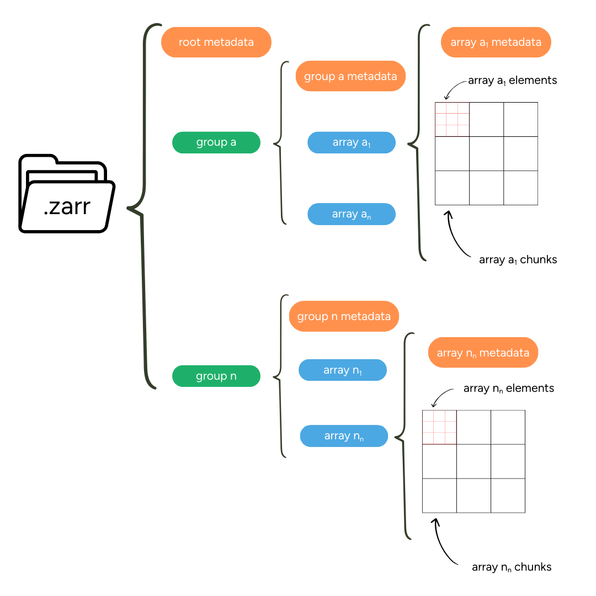
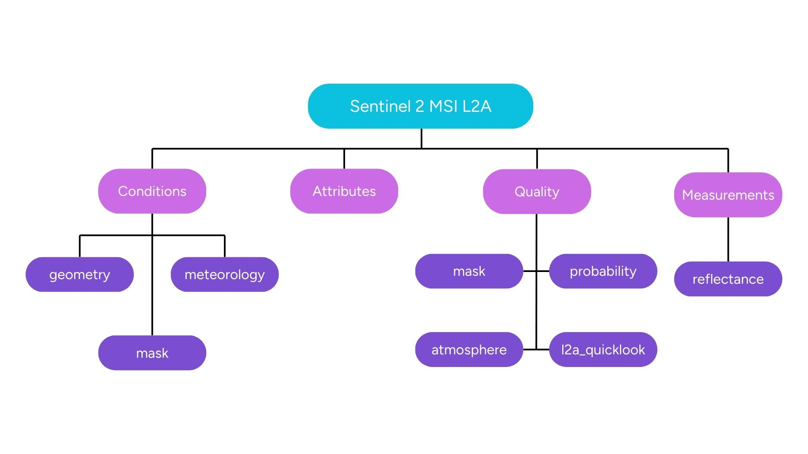

Overview of the EOPF Zarr format
What Is Zarr?
Zarr is an open-source, cloud-native protocol for storing multi-dimensional arrays. It is specifically desgined to work well with cloud storage and larger-scale computing systems and can be seen as a cloud-native alternative to older formats like HDF5 or NetCDF.
Key advantage to traditional formats is that the Zarr specification stores large multi-dimensional arrays in chunks, which are smaller pieces of the larger array. Chunks can be accessed individually or multiple chunks can be read and written in parallel, making data access highly efficient.
Zarr works across different storage systems, including local file systems, cloud object storage as well as distributed file systems; offering a greater flexibility compared to traditional file formats.
In addition, Zarr embeds metadata directly alongside the data. This makes Zarr self-descriptive, as each data array contains descriptive information about itself, such as data type, dimensions or additional attributes.
Pro tip: Learn more about Zarr in the official Zarr Documentation and the Zarr V3 storage specification
Components of Zarr
Zarr is organised in a human-readable, hierarchical structure using simple JSON metadata files and is composed of groups and stores, chunks and metadata:
Groups and Stores
Groups and stores are concepts that allow Zarr to differentiate between (i) where the data is stored (stores) and (ii) how it is organised (groups). A group is a container for logically organising the data, similar to folders in a file system. A store defines where the data is stored; it can be e.g. a bucket in the cloud or a directory on a disk.
Chunks
Zarr divides arrays into smaller, independent pieces (chunks). Through chunking it is possible to retrieve and process specific areas without loading the complete dataset. Its organisation into chunks is the main reason Zarr’s high performance. Chunks are saved as binary files inside a /c directory and are further organised through nested folder paths based on their index, e.g. c/0/0/0 for the chunk position [0,0.0].
Metadata
Zarr uses descriptive metadata to describe the individual arrays but also the full hierarchy of the dataset. Metadata are stored in zarr.json files and are available on the array, group and store level. This structured metadata approach makes Zarr datasets self-descriptive and easy to navigate.
The graphic below shows an overview of all relevant Zarr components.

Zarr EOPF Format Structure
The ESA Copernicus Earth Observation Processor Framework defines .zarr as the encoding format for the EOPF catalogue. The Zarr encoding is well aligned with ESA’s objective of enhancing the accessibility of Sentinel Data by modernising the previous .SAFE encoding into a flexible, cloud-native structure. The cloud-native nature of zarr is expected to broaden the applications of the Sentinel data within the geospatial community while maintaining data quality and established algorithms.
EOPF Zarr products contain of four main groups:
| Group | Contents |
|---|---|
| Attributes | STAC format metadata for the .zarr element |
| Measurements | Main retrieved variables |
| Conditions | Measurement context (geometric angles, meteorological/instrumental data) |
| Quality | Flags and quality information for measurement filtering |
Let us imagine a Sentinel-2 L2A tile. The tile has dimensions of approximately 10,980 by 10,980 pixels, and include 12 spectral bands (B01 to B12, excluding B10) at different resolutions, plus additional data arrays like a Scene Classification Map (SCL) and an Atmospheric Optical Thickness (AOT) array.
For efficient handling, the data is divided into 1024 by 1024-pixel chunks. This chunking strategy allows for optimal performance when reading specific spatial regions of interest.
Following the defined EOPF Zarr product structure, a Sentinel-2 L2A .zarr file is organized as follows:
- Under
attributes, you’ll find:- Processing history metadata
- Chunking configuration
- Global metadata (acquisition time, sensing time, etc.)
- Product-specific metadata
- Under
measurements, the spectral bands are stored at their native resolutions:- 10m resolution (r10):
- B02 (Blue, 490nm)
- B03 (Green, 560nm)
- B04 (Red, 665nm)
- B08 (NIR, 842nm)
- 20m resolution (r20):
- B05 (Red Edge 1, 705nm)
- B06 (Red Edge 2, 740nm)
- B07 (Red Edge 3, 783nm)
- B8A (Narrow NIR, 865nm)
- B11 (SWIR 1, 1610nm)
- B12 (SWIR 2, 2190nm)
- 60m resolution (r60):
- B01 (Coastal aerosol, 443nm)
- B09 (Water vapour, 945nm)
- 10m resolution (r10):
- Under
quality, you’ll find quality indicators including:- Scene Classification Layer (SCL)
- Quality flags for each band
- Detector footprint
- Defective pixels masks
- Under
conditions, there’s measurement context information:- Sun angles (zenith, azimuth)
- Viewing angles
- Mean solar irradiance
- Atmospheric parameters like:
- Aerosol Optical Thickness (AOT)
- Water Vapor (WV)
- Cloud and snow probability

This EOPF Zarr organisation for Sentinel-2 L2A data allows for efficient access to individual bands or specific spatial regions without loading the entire dataset, making it ideal for large-scale geospatial analysis. It also ensures all relevant metadata is co-located with the data it describes, enhancing data discoverability and usability.
Zarr Deep Dive: Dive deeper into the benefits of Zarr in a blogpost by Lindsey Nield from the Earthmover team: Fundamentals: What is Zarr? A Cloud-Native Format for Tensor Data.